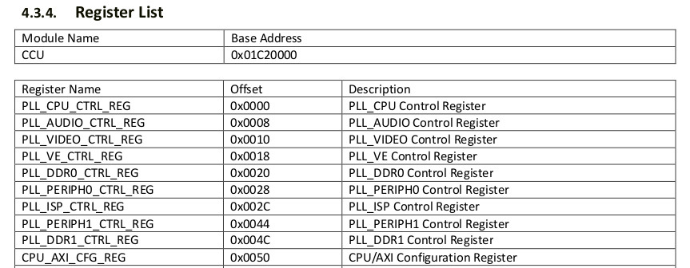
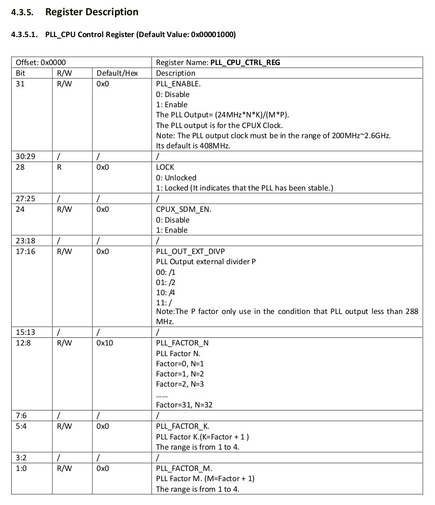
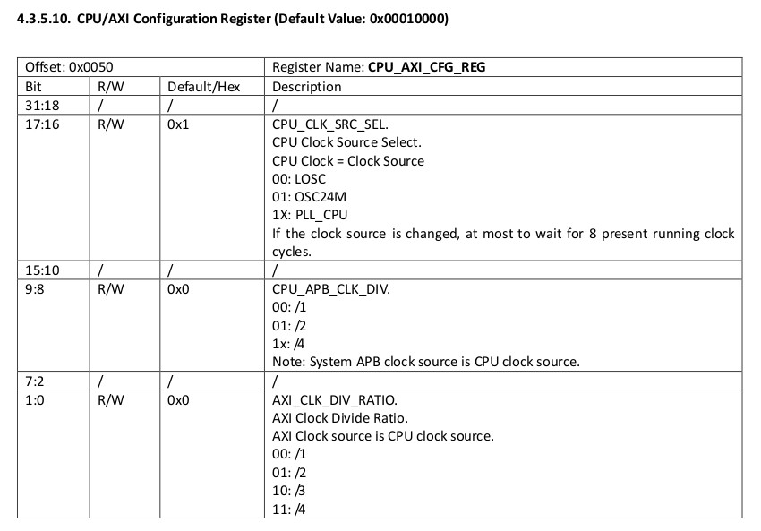

參考資訊：
https://github.com/steward-fu/website/releases/download/datasheet/allwinner_s3_rm.pdf
CCU位址



.global _start
.equ CCU_BASE, 0x01c20000
.equ GPIO_BASE, 0x01c20800
.equ PG_CFG1, (GPIO_BASE + (0x24 * 6) + 0x04)
.equ PG_DATA, (GPIO_BASE + (0x24 * 6) + 0x10)
.equ PLL_CPU_CTRL_REG, 0x00
.equ CPU_AXI_CFG_REG, 0x50
.arm
.text
_start:
.long 0xea000016
.byte 'e', 'G', 'O', 'N', '.', 'B', 'T', '0'
.long 0, __spl_size
.byte 'S', 'P', 'L', 2
.long 0, 0
.long 0, 0, 0, 0, 0, 0, 0, 0
.long 0, 0, 0, 0, 0, 0, 0, 0
_vector:
b reset
b .
b .
b .
b .
b .
b .
b .
reset:
ldr r0, =CCU_BASE
ldr r1, =(1 << 31) | (12 << 8)
str r1, [r0, #PLL_CPU_CTRL_REG]
1:
ldr r1, [r0, #PLL_CPU_CTRL_REG]
tst r1, #(1 << 28)
beq 1b
ldr r0, =CCU_BASE
ldr r1, =(3 << 16)
str r1, [r0, #CPU_AXI_CFG_REG]
ldr r0, =PG_CFG1
ldr r1, =0x11111111
str r1, [r0]
ldr r0, =PG_DATA
ldr r2, =0xffff
str r2, [r0]
ldr r0, =PG_DATA
ldr r1, =(1 << 10)
0:
eor r2, r1
str r2, [r0]
ldr r3, =500000
1:
subs r3, #1
bne 1b
b 0b
.end
完成